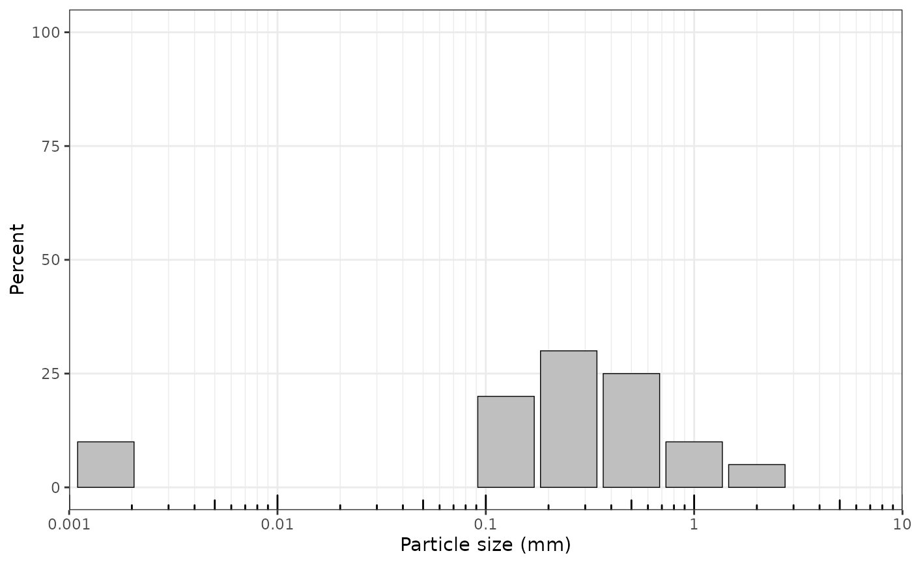
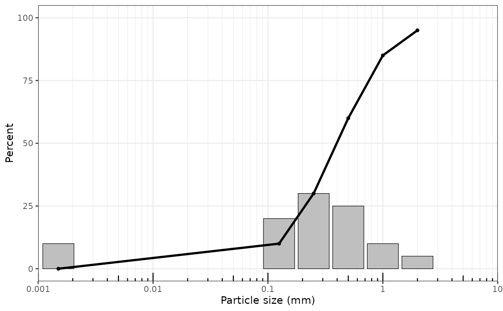
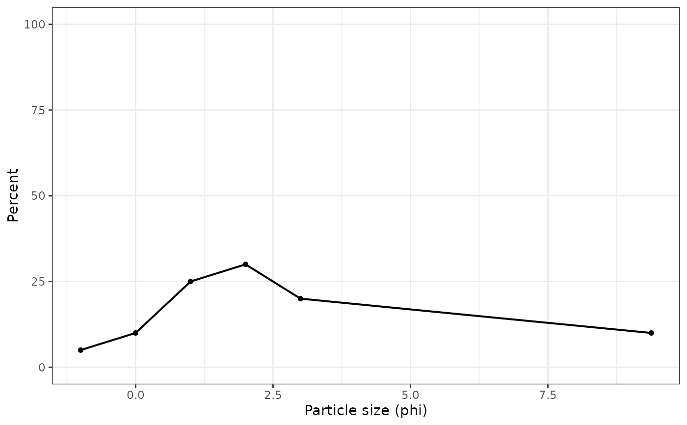

plot_distribution() plots retained grain-size percentages by particle-size
class. Metric displays center bars on the original particle-size class
values after unit conversion, with lower open-ended classes displayed at
0.0015 mm for plotting only.
Arguments
- x
A valid
gsd_tblobject.- x_scale
Display scale for the grain-size axis.
"log10"uses grain-size values inparticle_unit;"linear_um"uses micrometre values;"phi"uses phi units.- type
Plot type:
"bar"or"line".- particle_unit
Particle-size unit for
x_scale = "log10". Preferred values are"mm"for millimetres and"um"for micrometres. Aliases"milli"and"micro"are also accepted.- sample
Optional sample selector. A character value selects by sample ID; a numeric value selects by one-based sample index using the order in which samples appear in
x.- sample_id
Optional character vector of sample identifiers to include. Kept for backward compatibility; use
samplefor new code.- show_open_ends
Should open-ended classes be included using raw size labels as plotting proxies?
- cumulative
Should a cumulative percent-finer line be overlaid on the retained-size bars? This combined display is useful for GRADISTAT-style grain-size summaries.
- facet_by_sample
Ignored compatibility argument. Distribution plots are single-sample displays; use
sampleorsample_idto select one sample, loop over samples, or arrange returned plots externally with another plotting package.
Examples
x <- data.frame(
sample_id = "A",
size_mm = c(2, 1, 0.5, 0.25, 0.125, 0.063),
retained_proportion = c(0.05, 0.10, 0.25, 0.30, 0.20, 0.10)
)
gsd <- as_gsd_tbl(x, sample_id, size_mm, retained_proportion)
plot_distribution(gsd, x_scale = "log10")

plot_distribution(gsd, sample = 1)

plot_distribution(gsd, cumulative = TRUE)
 plot_distribution(gsd, x_scale = "phi", type = "line")
plot_distribution(gsd, x_scale = "phi", type = "line")
